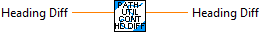
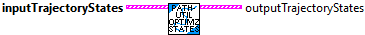

Normalize a heading difference so that it falls withing (+/- PI).

Optimize trajectory states by removing states that are too similar. The first and last states are always kept. This reduces the overall number of states. This also prevents potential divide by zero errors during sample interpoloation. This is used when convering a Pathfinder Path to a Trajectory.
This routine provides a complete conversion of a Pathfinder Path to a Trajectory. Each Pathfinder path sample is converted to a Trajectory State. The Trajectory states are optimied. (This is required to ensure that divide by zero doesn't occur when interpolating between states.) Then a Trajectory is created from the array of Trajectory states.
Parameters:
- Pathfinder Path - Array of pathfinder created states
Returns:
- Trajectory - Trajectory data structure.

Convert an array of Pathfinder created Path states to an array of Trajectory States. Inches are converted to Meters. Angles are converted to headings (+/- PI). This routine only does a portion of the work needed to convert a Pathfinder Path to a complete Trajectory. (See PathfinderUtil_ToTrajectory for a complete routine.)
Parameters:
- Pathfinder Path - Array of pathfinder created states
Returns:
- Trajectory States - Array of Trajectory states.